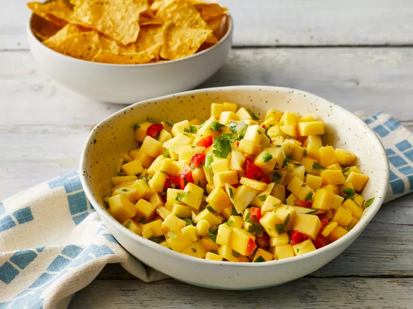

Home
Mango Salsa

Description
This mango salsa recipe is easy to make with ripe mangos, bell pepper, and lime juice. Jalapeños add some heat. It's so refreshing and tasty on fish tacos or with chips for dipping.
Ingredients
These are the simple, fresh ingredients you’ll need to make this easy mango salsa recipe:
- Mango: Should be well and safely peel and cut.
- Vegetables: You’ll need a red bell pepper, a green onion, and a jalapeño.
- Cilantro: Fresh cilantro lends vibrant color and flavor.
- Citrus juice: A blend of lime and citrus juices add bright flavor.
Steps
- Gather the ingredients
- Place mango, red bell pepper, green onion, jalapeño, cilantro, lime juice, and lemon juice in a medium bowl.
- Mix ingredients well to combine. Cover and let sit at least 30 minutes before serving.
- Serve with chips